- Представить данные в длинном формате с правильным обозначением перменных и пропущенных значений
- Построить простейшие статистические графики с использованием функций из пакета ggplot2
- Настраивать параметры графиков
Вы сможете
Данные
Исходные данные часто приходится приводить в порядок
На подготовку данных к анализу уходит до 80% времени.
Существуют определенные правила предоставления данных.
Данные, построенные в соответствии с этими требованиями, называются tidy data, или опрятные данные.
Проблемы начинаются уже в электронных таблицах

Основные ошибки
- Объединенные ячейки
- Отсутствующие заголовки столбцов, вместо них стоят какие-то числа (или ничего не стоит) или слишком длинные имена заголовков
- В одной ячейке находится сразу несколько значений
- Разнородные данные в пределах одного столбца
- Нет стандартного обозначения пропущенных значений
- Разные группы значений кодируются цветовыми выделениями
Принятые нормы
- Столбцы - переменные (variables)
- Строки - объекты (observations)
- В каждой переменной только один тип данных
- На месте пропущенных значений стоит специальный знак (в R принят
NA)
При работе в Excel не должно быть никаких объединенных ячеек!
Управление данными
В среде R создано несколько удобных пакетов для преобразования данных:
reshape2dplyrtidyr
Мы постепенно научимся ими пользоваться
Два формата представления данных
Широкий формат: данные максимально структурированы, каждая строка может нести информацию о многих элементарных объектах
Длинный формат: данные минимально структурированы, каждая строка характеризует уникальный объект
Из длинного формата легко получить широкий.
Из широкого формата получить длинный заметно сложнее.
Широкий формат хорош для отчетов, представления обобщенных результатов
Длинный формат хорош для анализа
Учимся читать внешние данные
titanic <- read.table('data/Titanic.csv',
sep = ';',
header = TRUE)
В каком формате представлены данные?
head(titanic, 8)
## Class Sex Age Survived Freq ## 1 1st Male Child No 0 ## 2 2nd Male Child No 0 ## 3 3rd Male Child No 35 ## 4 Crew Male Child No 0 ## 5 1st Female Child No 0 ## 6 2nd Female Child No 0 ## 7 3rd Female Child No 17 ## 8 Crew Female Child No 0
Длинный формат данных
library(tidyr)
long_titanic <- uncount(titanic,
weights = Freq)
head(long_titanic, 10)
## Class Sex Age Survived ## 1 3rd Male Child No ## 2 3rd Male Child No ## 3 3rd Male Child No ## 4 3rd Male Child No ## 5 3rd Male Child No ## 6 3rd Male Child No ## 7 3rd Male Child No ## 8 3rd Male Child No ## 9 3rd Male Child No ## 10 3rd Male Child No
Данные для визуализации
Данные взяты из работы
Tager, I. B., Weiss, S. T., Rosner, B., and Speizer, F. E. (1979). Effect of parental cigarette smoking on pulmonary function in children. American Journal of Epidemiology, 110, 15-26.
Источник данных: [http://www.statsci.org/data/general/fev.html]
Структура данных:
Age — ВозрастFEV — Объем легких при выдохе (литры) (forced expiratory volume)Height — Рост (дюймы)Sex — пол (Male or Female)Smoker — некурящие (Non), курящие (Current)
Читаем данные
library(readxl)
fev <- read_excel("data/fev.xls",
sheet = "tidy_data",
col_names = TRUE,
na = "NA",
skip = 1 )
Анализируем структуру данных
Имена переменных
names(fev)
## [1] "Age" "FEV" "Height" "Sex" "Smoker"
Анализируем структуру данных
Содержание переменных
str(fev)
## tibble [654 × 5] (S3: tbl_df/tbl/data.frame) ## $ Age : num [1:654] 9 8 7 9 9 8 6 6 8 9 ... ## $ FEV : num [1:654] 1.71 1.72 1.72 1.56 1.9 ... ## $ Height: num [1:654] 57 67.5 54.5 53 57 61 58 56 58.5 60 ... ## $ Sex : chr [1:654] "Female" "Female" "Female" "Male" ... ## $ Smoker: chr [1:654] "Non" "Non" "Non" "Non" ...
Изменяем формат переменных
Необходимо заменить формат в переменных fev$Sex и fev$Smoker
fev$Sex <- factor(fev$Sex) fev$Smoker <- factor(fev$Smoker)
функция factor() превращает числовые или текстовые данные в дискретные факторы
Пропущенные значения NA
Если необходимо убрать объекты, у которых что-то не измерено (NA), то надо произвести “очистку данных”.
НО! не увлекайтесь, иногда можно “вычистить”” важную информацию
В каких строках содержится пропущенная информация?
fev[which(!complete.cases(fev)), ]
## # A tibble: 2 × 5 ## Age FEV Height Sex Smoker ## <dbl> <dbl> <dbl> <fct> <fct> ## 1 16 4.50 72 Male <NA> ## 2 NA 3.21 66.5 Female Non
здесь используется сразу две функции: which(), в нее вложена complete.cases()
! - логическая операция “NOT”
[ , ] - оператор индексации на первом месте строка, на втором - столбец
Убираем из датафрейма неполные строки
fev <- fev[complete.cases(fev), ]
Визуализация данных
Три системы визуализации в R
- Base Graphics
- Lattice
- ggplot2
Система ggplot2
Название пакета происходит от слов “Grammar”, “Graphics”, “Plot”.
В основе подхода, реализованного в пакете, лежит идея грамматики графиков “Semiology of Graphics” (Bertin, 1983).
Более позднее обобщение “The Grammar of Graphics” (Wilkinson, Anand and Grossman, 2005).
Визуализация данных (первый заход)
Задача: построить точечную диаграмму, где по оси OX отложен Age, а по оси OY отложен FEV
ggplot(data = fev, aes(x = Age, y = FEV)) + geom_point()
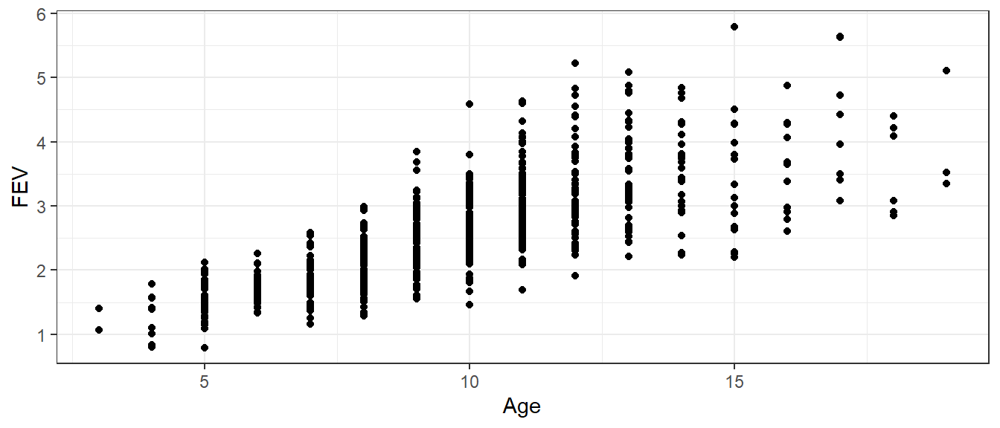
убираем серый фон
ggplot(data = fev, aes(x = Age, y = FEV)) + geom_point() + theme_bw()

убираем серый фон
ggplot(data = fev, aes(x = Age, y = FEV)) + geom_point() + theme_classic()

убираем серый фон
ggplot(data = fev, aes(x = Age, y = FEV)) + geom_point() + theme_minimal()
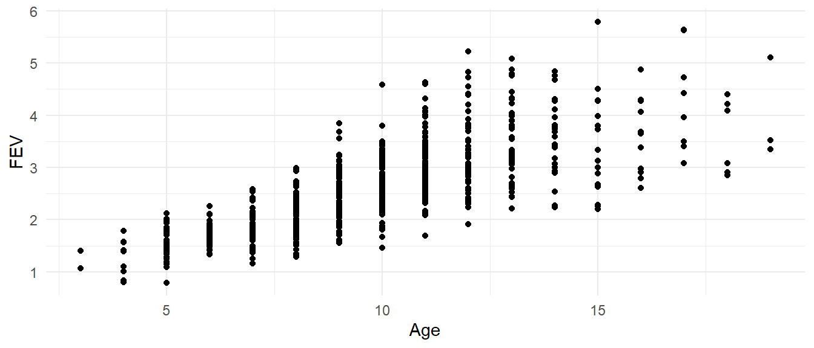
Устанавливаем понравившуюся тему, как основную.
theme_set(theme_bw())
далее все графики, производимые в данной сессии, будут использовать именно эту тему
ggplot(data = fev, aes(x = Age, y = FEV)) + geom_point()

Изменяем подписи осей
ggplot(data = fev, aes(x = Age, y = FEV)) + geom_point() + labs(x = "Возраст", y = "Объем легких")
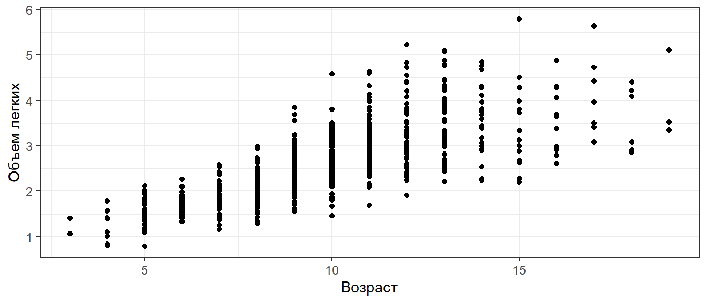
Создаем верхний заголовок рисунка
ggplot(data = fev, aes(x = Age, y = FEV)) +
geom_point() +
labs(x = "Возраст", y = "Объем легких",
title = "Зависимость между \n возрастом и объемом легких")
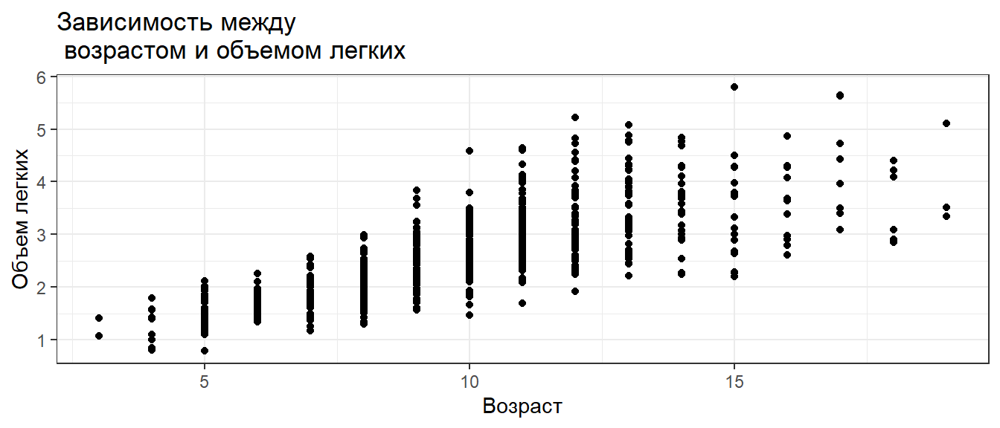
Делаем заголовок центральным
ggplot(data = fev, aes(x = Age, y = FEV)) +
geom_point() +
labs(x = "Возраст", y = "Объем легких",
title = "Зависимость между \n возрастом и объемом легких") +
theme(plot.title = element_text(hjust = 0.5))
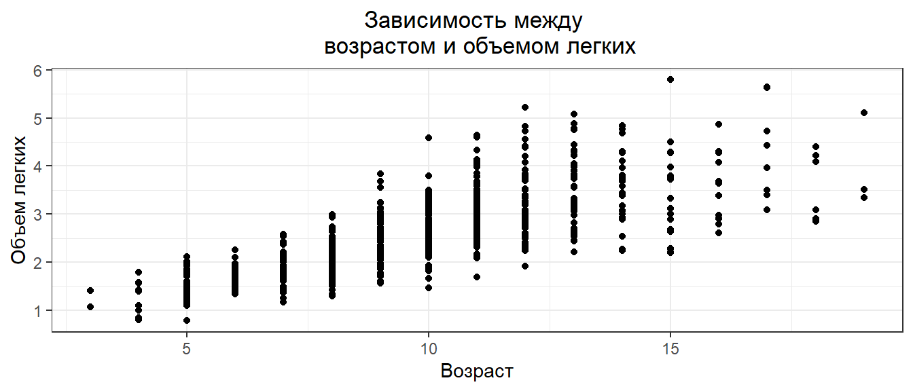
Меняем размер точек
Крупнее
ggplot(data = fev, aes(x = Age, y = FEV)) +
geom_point(size = 3) +
labs(x = "Возраст", y = "Объем легких",
title = "Зависимость между \n возрастом и объемом легких") +
theme(plot.title = element_text(hjust = 0.5))
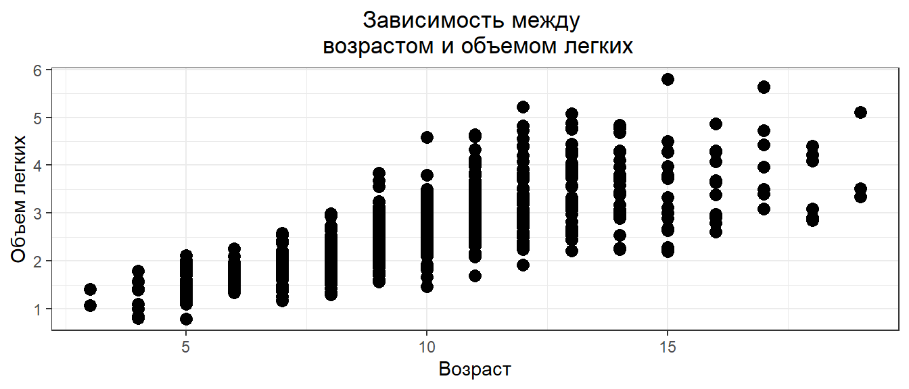
Меняем размер точек
Мельче
ggplot(data = fev, aes(x = Age, y = FEV)) +
geom_point(size = 0.1) +
labs(x = "Возраст", y = "Объем легких",
title = "Зависимость между \n возрастом и объемом легких") +
theme(plot.title = element_text(hjust = 0.5))
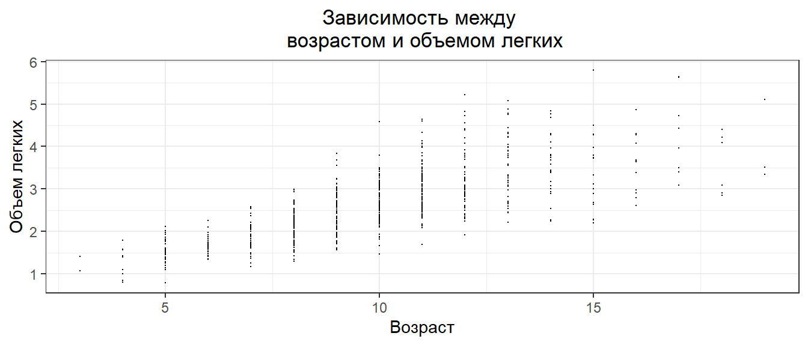
Меняем цвет и форму точек
ggplot(data = fev, aes(x = Age, y = FEV)) +
geom_point(color = "blue") +
labs(x = "Возраст", y = "Объем легких",
title = "Зависимость между \n возрастом и объемом легких") +
theme(plot.title = element_text(hjust = 0.5))
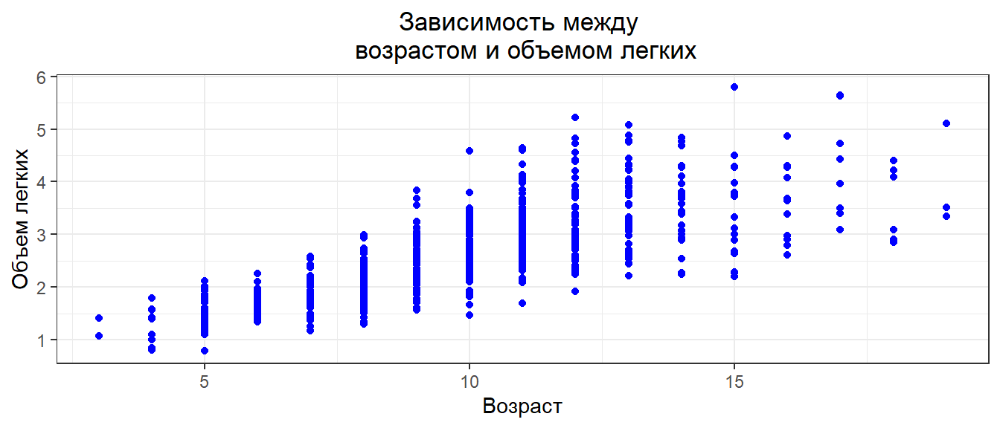
Меняем цвет и форму точек
ggplot(data = fev, aes(x = Age, y = FEV)) +
geom_point(shape = 22, color = "red", fill = "yellow", size = 2) +
labs(x = "Возраст", y = "Объем легких",
title = "Зависимость между \n возрастом и объемом легких") +
theme(plot.title = element_text(hjust = 0.5))
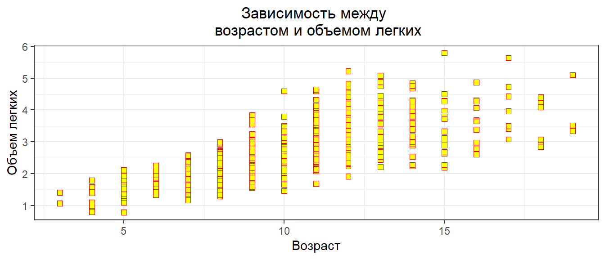
Сохраняем рисунок в файл
Создаем рисунок
ggplot(data = fev, aes(x = Age, y = FEV)) + geom_point(shape = 22, color = "red", fill = "yellow", size = 2) + labs(x = "Возраст", y = "Объем легких", title = "Зависимость между \n возрастом и объемом легких") + theme(plot.title = element_text(hjust = 0.5))
Сохраняем рисунок в файл
Сохраняем текущий рисунок в файл
ggsave("MyPicture.wmf", plot = last_plot())
Рисунок-переменная
Рисунок можно, и это правильно, поместить в специальную переменную
Plot_1 <- ggplot(data = fev, aes(x = Age, y = FEV)) + geom_point(shape = 22, color = "red", fill = "yellow", size = 2) Plot_1
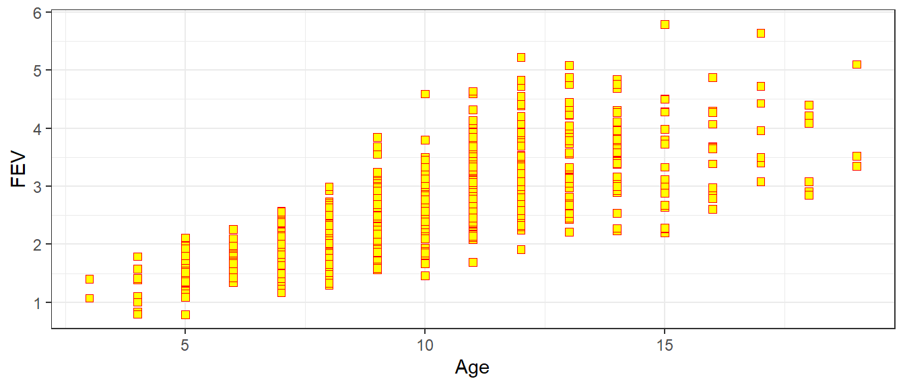
Далее эту переменную можно модифицировать
Plot_1 + labs(x = "Возраст", y = "Объем легких", title = "Зависимость между \n возрастом и объемом легких") + theme(plot.title = element_text(hjust = 0.5))

Далее эту переменную можно модифицировать
Plot_2 <- Plot_1 + labs(x = "Возраст", y = "Объем легких", title = "Зависимость между \n возрастом и объемом легких") + theme(plot.title = element_text(hjust = 0.5))
ggsave("MyPicture_2.wmf", plot = Plot_2)
Эстетики (Aesthetics)
В философии ggplot эстетики - это та информация (данные), которую можно выразить графиком.
Минимальные эстетики - Положение на OX и положение на OY
Однако наши данные содержат еще и информацию о поле (переменная fev$Sex). Если эти данные для нас важны, то мы должны эту информацию выразить на графике
Отражаем данные о поле с помощью цвета
Plot_1 <- ggplot(data = fev, aes(x = Age, y = FEV, color = Sex )) + geom_point(size = 2) + labs(x = "Возраст", y = "Объем легких", title = "Зависимость между \n возрастом и объемом легких") + theme(plot.title = element_text(hjust = 0.5)) Plot_1
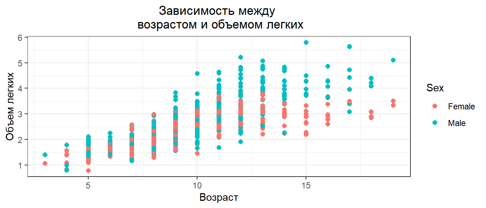
Меняеем цвет на тот, который нам нравится
Plot_1 <- Plot_1 + scale_color_manual(values = c("pink","blue"))
Plot_1
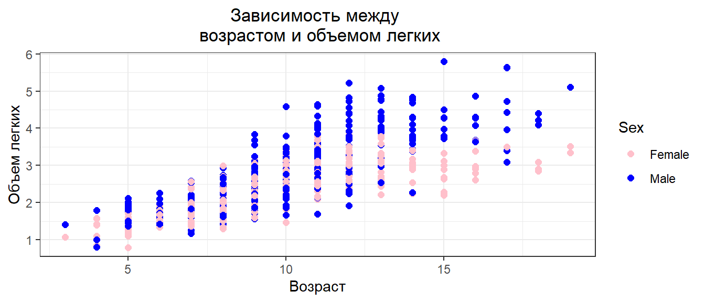
Меняеем положение легенды
Plot_1 + theme(legend.position = "bottom")
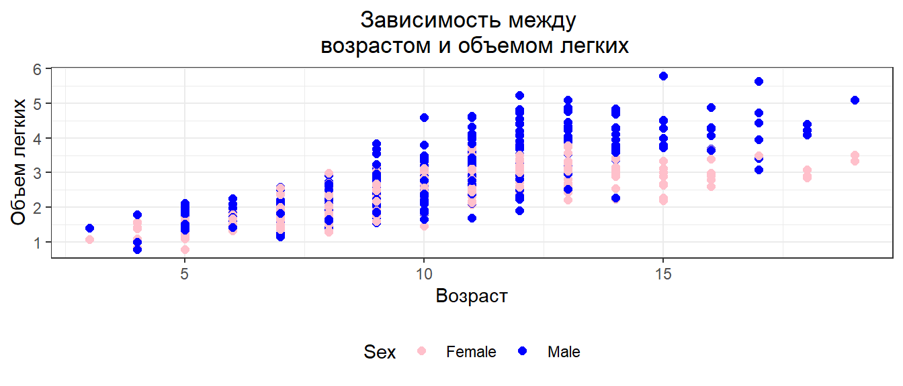
Меняем положение легенды
Plot_1 + theme(legend.position = "left")
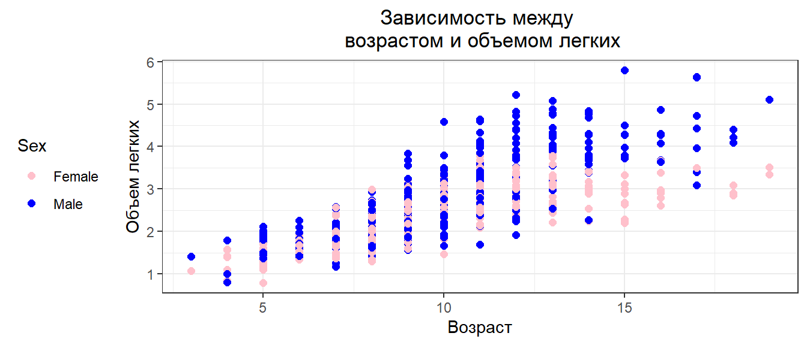
Меняем положение легенды
Plot_1 + theme(legend.position = c(0.1, 0.9))
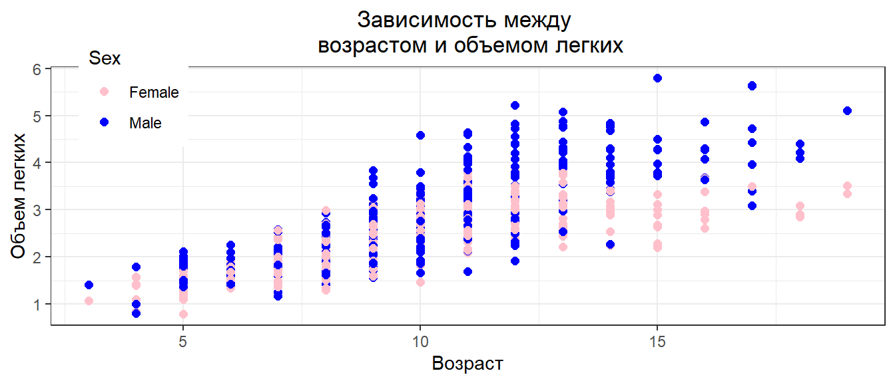
c(0.1, 0.9) координаты указываются в долях от сторон рисунка
Отражаем данные о поле с помощью формы точек
Plot_1 <- ggplot(data = fev, aes(x = Age, y = FEV, shape = Sex, color = Sex )) + geom_point(size = 2) + labs(x = "Возраст", y = "Объем легких", title = "Зависимость между \n возрастом и объемом легких") + theme(plot.title = element_text(hjust = 0.5)) Plot_1
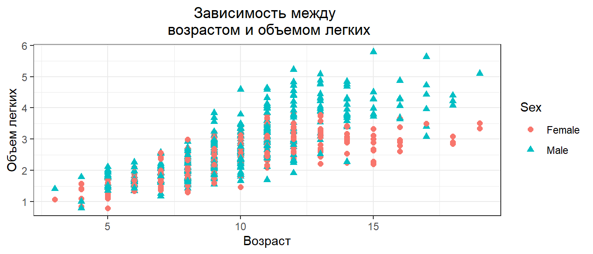
В нашем датафрейме есть еще и данные о курении
Если мы хотим выразить графиком одновременно данные по полу и по курению, то мы должны задать две разные эстетики
Plot_1 <- ggplot(data = fev, aes(x = Age, y = FEV, shape = Sex, color = Smoker )) + geom_point(size = 2) + labs(x = "Возраст", y = "Объем легких", title = "Зависимость между \n возрастом и объемом легких") + theme(plot.title = element_text(hjust = 0.5)) Plot_1
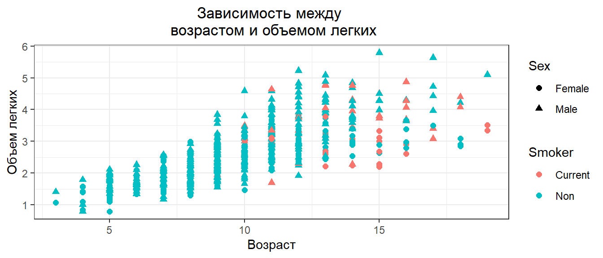
в этом трудно разобраться
Используем фасетирование
Plot_1 + facet_wrap( ~ Smoker) #уже лучше
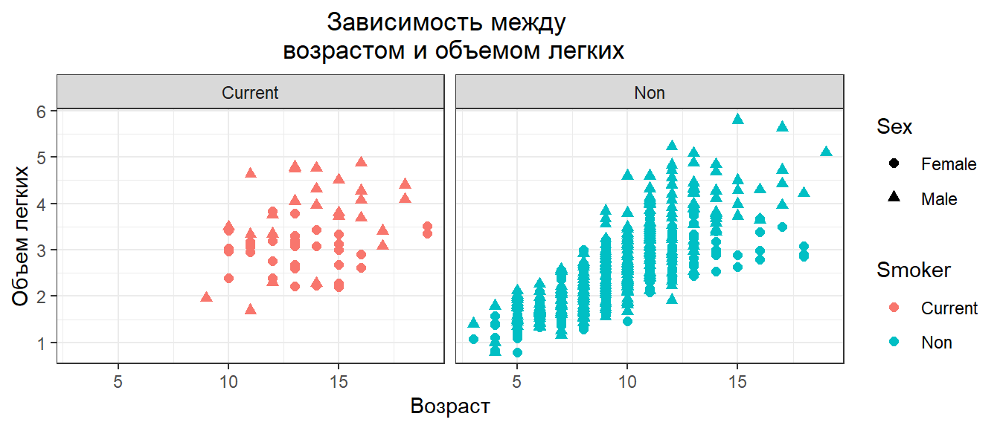
Используем фасетирование
Plot_1 + facet_grid(Sex ~ Smoker)
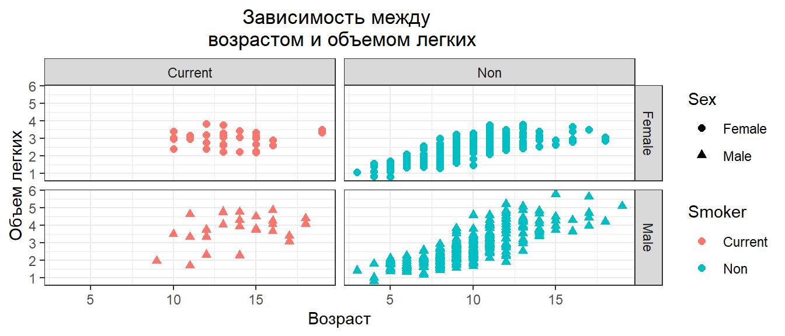
Геомы (Geom)
Геомы - это геометрические объекты, которые отражают данные (точки, линии, столбцы, “усы” и т. д.)
Задание: построить гистограмму, отражающую частотное распределение объема легких
Для решений этой задачи не годится применение точечных диаграмм
Нам нужен другой геом
geom_histogram()
ggplot(fev, aes(x = FEV)) + geom_histogram()
## `stat_bin()` using `bins = 30`. Pick better value with ## `binwidth`.
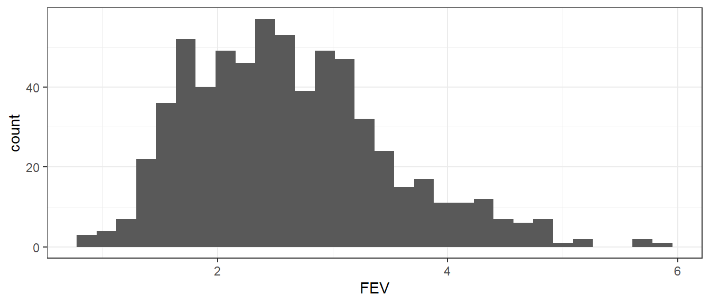
Меням ширину класса
Делаем более широкие классовые интервалы
ggplot(fev, aes(x = FEV)) + geom_histogram(binwidth = 1)
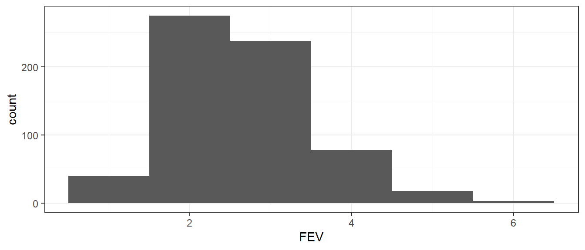
Меням ширину класса
Делаем более узкие классовые интервалы
ggplot(fev, aes(x = FEV)) + geom_histogram(binwidth = 0.1)
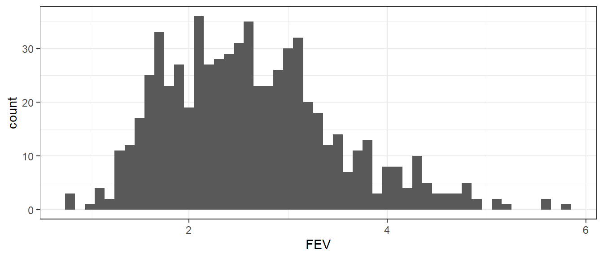
Семейство Функций stat
Поскольку в основе построения гистограммы лежит статистическая процедура (определение частот), то все тоже самое можно сделать с помощью функций stat_…
ggplot(fev, aes(x = FEV)) + stat_bin(geom = "bar") #Аналогично!

Меняем ширину класса
ggplot(fev, aes(x = FEV)) + stat_bin(geom = "bar", binwidth = 0.1)
Аналогично применению geom_histogram(binwidth = 0.1)
Используем другой геом
Частотное распределение можно выразить еще и линией
ggplot(fev, aes(x = FEV)) + stat_bin(geom = "line", size = 1, color = "red")
## `stat_bin()` using `bins = 30`. Pick better value with ## `binwidth`.
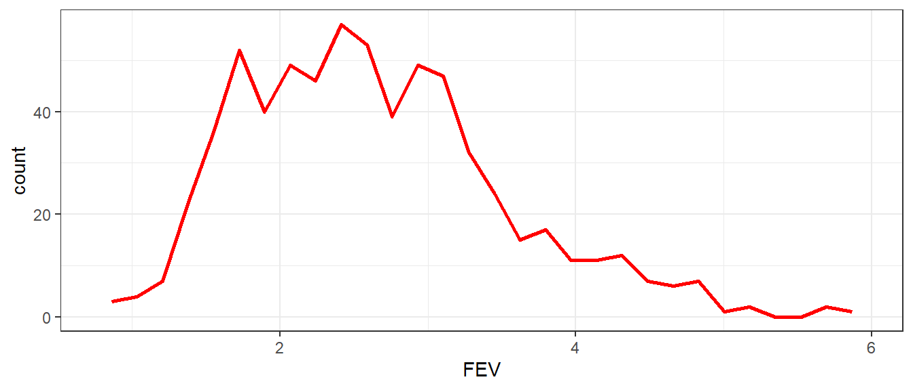
Используем другой геом
А можно еще и закрашенной областью
ggplot(fev, aes(x = FEV)) + stat_bin(geom = "area", size = 1, color = "red")
## `stat_bin()` using `bins = 30`. Pick better value with ## `binwidth`.
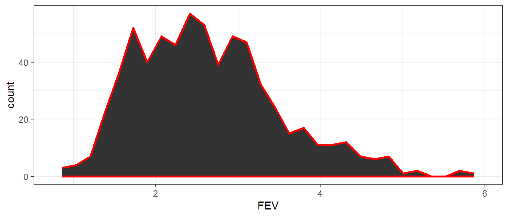
Можно еще многими способами….
Например, так
ggplot(fev, aes(x = FEV)) + stat_density(geom = "area", size = 1, color = "red", fill = "blue")
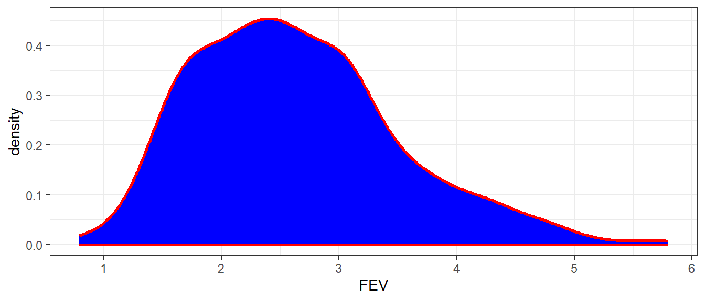
Применяем фасетирование
Но у нас есть еще и данные по полу
Мы можем отразить частотное распределение с помощью фасетирования
ggplot(fev, aes(x = FEV)) + geom_histogram() + facet_wrap( ~ Sex)
## `stat_bin()` using `bins = 30`. Pick better value with ## `binwidth`.
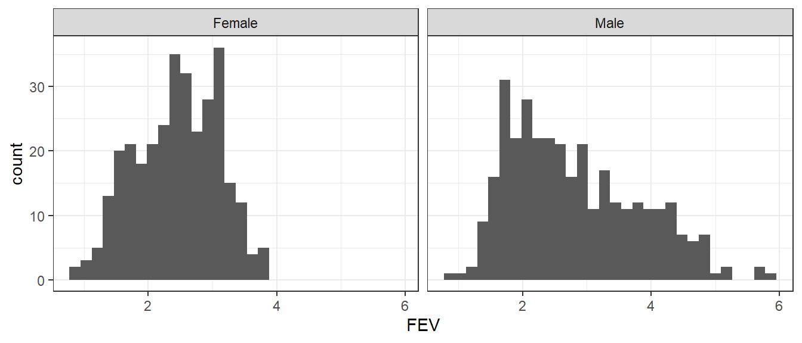
Так удобнее сравнивать
ggplot(fev, aes(x = FEV)) + geom_histogram() + facet_wrap( ~ Sex, ncol = 1)
## `stat_bin()` using `bins = 30`. Pick better value with ## `binwidth`.
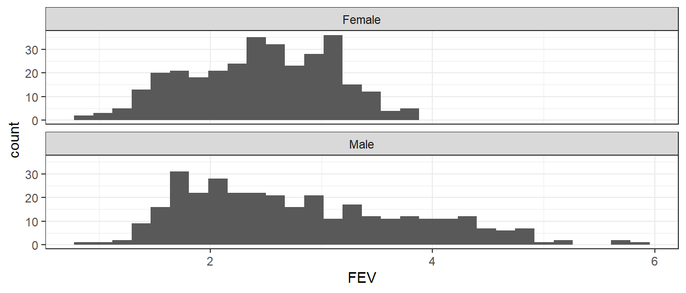
Отражаем частотное распределение с использованием данных по полу и курению
ggplot(fev, aes(x = FEV, fill = Smoker)) + geom_histogram() + facet_wrap( ~ Sex, ncol = 1)
## `stat_bin()` using `bins = 30`. Pick better value with ## `binwidth`.

Трудно читать
Лучше так
ggplot(fev, aes(x = FEV, fill = Smoker)) + stat_density(geom = "area", size = 1, color = "red") + facet_wrap( ~ Sex, ncol = 1)
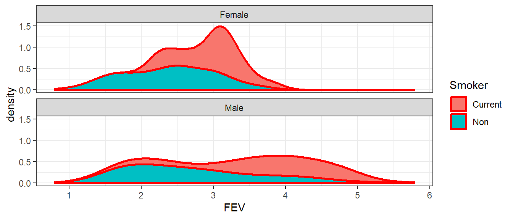
Визуализация данных с использованием простейшей статистической обработки
Задание: отразить срдний объем легких у разных возрастов
ggplot(fev, aes(x = Age, y = FEV)) + stat_summary(fun.y = "mean", geom = "line", size = 2)
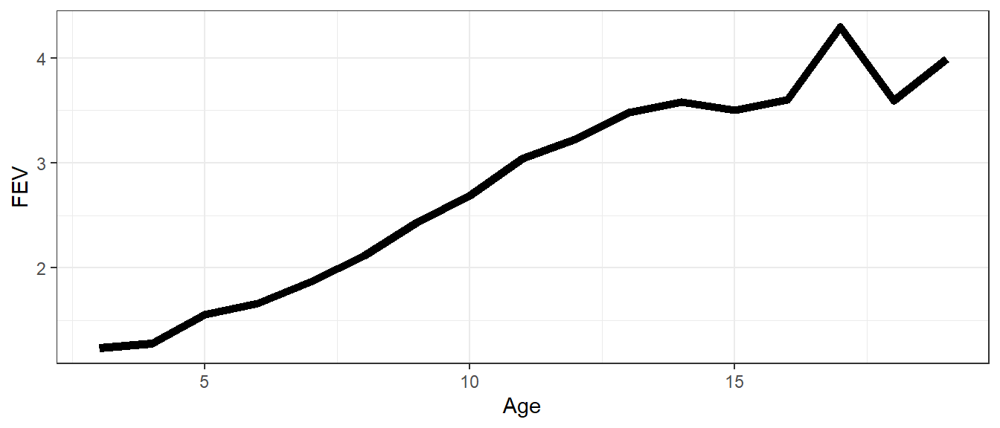
Добавляем данные по полу
ggplot(fev, aes(x = Age, y = FEV, color = Sex)) + stat_summary(fun.y = "mean", geom = "line", size = 2)
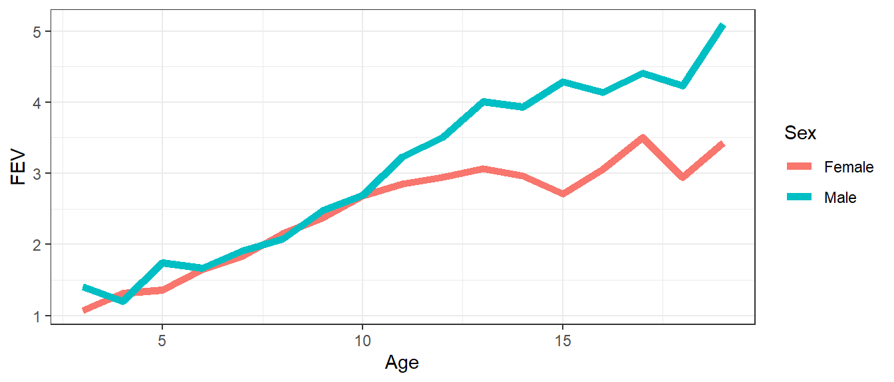
Добавляем данные по курению
ggplot(fev, aes(x = Age, y = FEV, color = Sex)) + stat_summary(fun.y = "mean", geom = "line", size = 2) + facet_wrap( ~ Smoker)
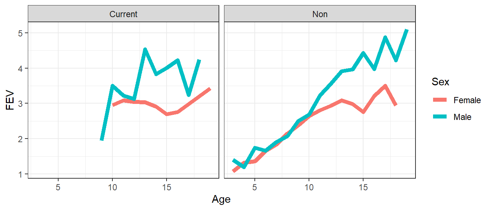
Задание:
Постройте столбчатые диаграммы, отражающие средний рост у представителей разного пола
Решение
ggplot(fev, aes(x = Sex, y = Height, fill = Sex)) + stat_summary(fun.y = "mean", geom = "bar")
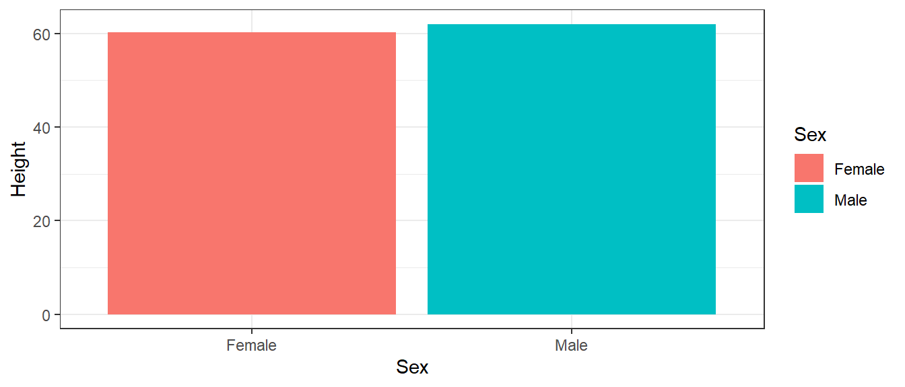
С помощью функций ggplot можно сразу вписать простые линейные модели и увидеть характер связей
ggplot(fev, aes(x = Age, y = FEV, color = Smoker)) + geom_point() + geom_smooth(method = "lm") + facet_wrap( ~ Sex)
## `geom_smooth()` using formula = 'y ~ x'
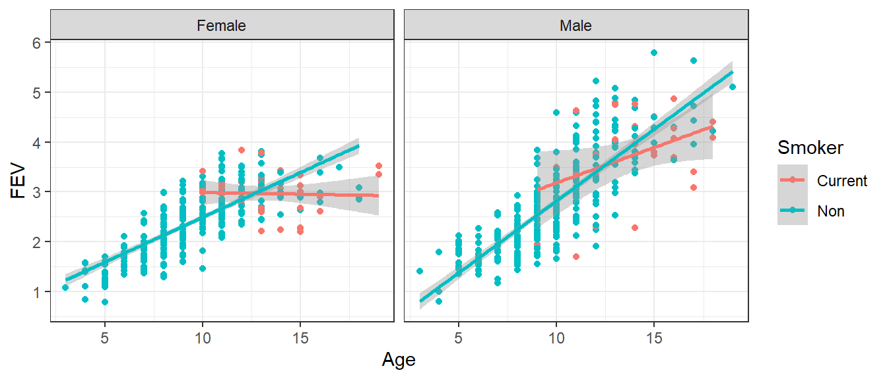
Take home messages
- Для анализа лучше подходит длинный формат
- Данные должны быть оформлены в соответствии с определнными правилами
- Пакет ggplot2 позволяет построить практически любой график